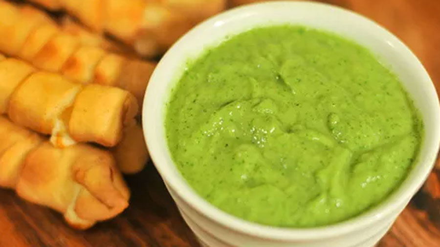

Guasacaca recipe

An iconic dipping sauce for (almost) everything!
Guasacaca is a vibrant green sauce perfect for dipping, topping, or adding a burst of flavor to your Venezuelan dishes. Here's how to make it
Ingredients
- 1-2 ripe avocados
- 1/2 red onion chopped cups water
- 1/2 green bell pepper, seeded and chopped onion chopped cups water
- 1-2 cloves garlic peeled
- 1/2 bunch fresh cilantro leaves
- 2-3 tablespoons white vinegar or lime juice (to taste)
- Water (optional, for consistency)
- Salt
Steps
Prepare the base:
- Peel and seed the avocado. Roughly chop the avocado, onion, bell pepper, and garlic cloves.
- Add all the chopped ingredients and cilantro leaves to a food processor or blender.
Blend and season:
- Pulse or blend the ingredients until you get a fairly smooth consistency. You can adjust the texture depending on your preference - some like it chunky, while others prefer it smooth.
- Add the vinegar or lime juice, starting with 2 tablespoons. Blend again to incorporate.
- Taste and adjust the seasoning with salt, pepper, and additional vinegar/lime juice if desired. If the mixture feels too thick, add a tablespoon of water at a time until you reach the preferred consistency.
- Transfer the guasacaca to a serving bowl. You can drizzle a little olive oil on top for an extra touch.
Enjoy!
- Serve immediately with your favorite Venezuelan dishes like arepas, grilled meats, empanadas or enjoy it with plantain chips for a delicious snack.
Tips
- Use ripe avocados for the creamiest texture.
- Adjust the amount of vinegar/lime juice according to your desired level of acidity..
- If you don't have a food processor or blender, you can finely mince all the ingredients and mix them together in a bowl.
- Guasacaca is best enjoyed fresh, but you can store leftovers in an airtight container in the refrigerator for up to a day. However, the color may darken slightly due to avocado oxidation.